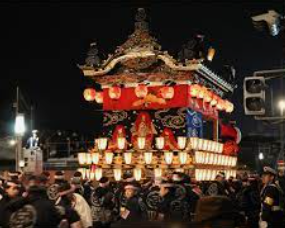
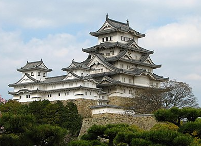

일본은 섬나라로 해양성 기후이기 때문에 고온다습한 나라로 여름에 땀이 많이 나는데
이를 극복하기 위해서 일본인들은 자주 목욕을 하게 되었다.
또한 일본은 화산지대가 많아서 온천이 발달해 덩달아 목욕문화도 발전하게 되었다.
세면대와 변기 물탱크가 합쳐진 화장실이 많이 존재한다.
2.무형문화재
마쓰리
'마쯔리'라는 말은 '제사를 지내다'(祭る)의 명사형으로, 원래는 신에게 제사를 지내는 의식을 말하는데
이 의미로의 '마쓰(츠)리'는 현재에도 기원제의 형태로 남아있다.
이것이 점차 변질되어 사람들끼리 즐기는 축제가 된 것이다.

노
노는 가마쿠라 시대 후기에 발원하여 무로마치 시대 초기에 완성된 일본의 가무극이다.
일본의 전통 예능인 노가쿠의 하나로, 원래 이름은 사루가쿠 노이다.
노멘 또는 오모테라고 부르는 가면을 사용하는 것이 특징이고 전용 극장인 노가쿠도에서 상연된다.
출연자는 모두 남성이며 가부키와 달리 여성역을 맡은 배우는 여성적 발성을 하지 않는다.
3.유형문화재
히메지성
유네스코 세계문화에 등재되었으며 현존하는 천수각을 가진 12곳의 성 가운데 한 곳이며, 에도 시대 이전에 건조된 천수를 가진 성곽 중 하나이다
<